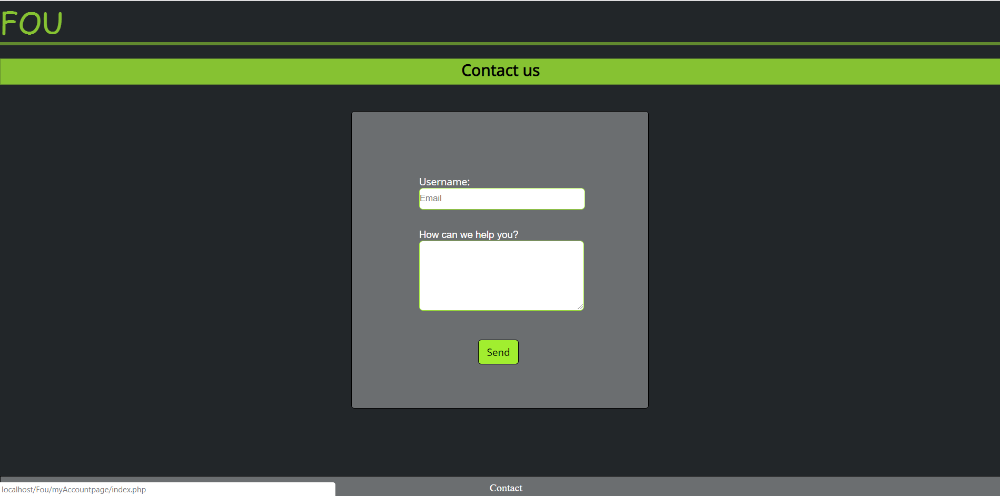

FOU - User Guide
Project authors
How to use FOU application
To use this application you first need to create an account.
Once you start the FOU application, you will get on the welcome page, which allows you to create a new account or login if you already created one. There are two buttons that you can press: "Register" and "Login".

If you press the "Register" button, you will be redirected to the register page, where you have to write your personal info in order to create an account. Once you press the "Create account", an account with your personal info will be created, and you will be redirected to the Login page, to log into your new created account.
Once you are on the Login page, you have to write the username and password of your account, and you will be redirected to the main application so you can actually enjoy uploading or downloading files.

Loging into your account, the first page you are going to see it's the My files page, which allows you to see
your private files. That means you are the only person that can see those files that you uploaded. On this page you will see the files
in the order that you uploaded them, the name of it, a short description, author, and the type of program.
Also the page has a few buttons that you can click, starting with the "My Files" on which you are already on, "All files" which allows you
to see all the public files from the application, "Add file" where you can upload a new file on the application, "Log out", and a search
button in case you want to look up some files.
If you want to change the order of the files, you can just group them by the author or the program.

Next button, "All Files", allows you to see all the public files, and also group them by author and program if you want to change the order.
If you want to upload a file to the application, you just click "Add file" and it would pop out a form which allows you to look up a file from your personal computer, and add some information about it that you can change it later.
All the files allow you to click on their name which will redirect you to another page where you can see all the information about that specified file such as name, author, type of file, description, tags, the data when it was uploaded, and the size. Also this page has a few buttons: "Modify File" where you can modify the information about that file you clicked on, "Download" a button to download the file and "Delete" to delete it if its yours.
Clicking "Modify file" you will see a page where you can change the name of a file, its description and its tags. Pressing "Save" it will redirect you to the previous page.
If you want to look up some file, you can search them by "author" and this will load all the files that are uploaded by that author. In the picture below, I searched the files by the author's name "adechan".

And whenever you want to log out, you can just press the button "Logout" and do it. Pressing "Yes", you will be redirected back to the main page to make a new account or log into another one.
If you want to give reviews or if you have any questions about the application, all you have to do is click the button "Contact" and write there anything that you want to tell us. Clicking "FOU" you will go back to the main page. If you are already logged in, you will be redirected to the "MyFile" page, and if you aren't logged in, you will be redirected to the welcome page.
